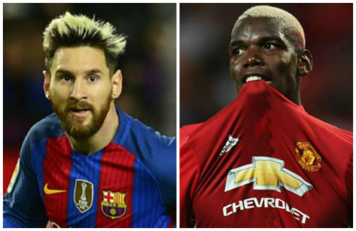

Barca không thiếu tiền
Năm 2008, trong cuộc họp bàn bí mật với Messi và thân phụ kiêm người đại diện - ông Jorge, BLĐ Barca đã cam kết sẽ biến siêu sao 29 tuổi thành cầu thủ hưởng lương cao nhất CLB, thậm chí lịch sử bóng đá nếu anh đủ xuất sắc để trở thành số 1 trên sân cỏ. 8 năm sau, Messi đã làm được, còn Barca cũng làm đủ mọi cách để thực hiện lời cam kết ấy.
Barca không thiếu thốn đến mức bán Messi để đổi lấy 100 triệu euro
Cũng trong khoảng thời gian 8 năm, "Gã khổng lồ xứ Catalunya" kiếm được hàng loạt hợp đồng béo bở, đỉnh điểm là sự kiện nhận gói tài trợ áo đấu thời hạn 4 năm, mỗi mùa gần 48 triệu bảng (55 triệu euro) với tập đoàn Rakuten (Nhật Bản). Hợp đồng này iến Barca thành đội có doanh thu từ tài trợ áo đấu hàng đầu thế giới mà chỉ... MU mới sánh bằng (Chevrolet, 53 triệu bảng/năm).
Như vậy, Barca có thể không nhiều tiền như MU, nhưng cũng chẳng thiếu thốn đến mức hạ mình vì 100 triệu euro để mất đi một biểu tượng vĩ đại , một... "con gà đẻ trứng vàng".
Vấn đề ở chính Messi
Messi đang trong giai đoạn nhạy cảm, nửa muốn tìm kiếm thử thách mới khi quá no nê vinh quang, nửa lại muốn ở lại để trở thành biểu tượng bất diệt. Nhưng cần biết, 29 không phải độ tuổi mà cầu thủ nào cũng mạo hiểm đánh cược sự nghiệp của mình ở giải đấu khắc nghiệt như Premier League.
Tuổi 29, Messi vẫn ngự trên đỉnh cao nhưng vài năm sau, chẳng ai đoán trước được anh sẽ ở đâu. Thậm chí HLV Jose Mourinho còn mạnh dạn dự báo: “5 năm nữa, Messi sẽ bước vào tuổi 34 và tất cả chúng ta sẽ phải rơi lệ tiếc nuối về tài năng của cậu ấy”.
Nếu tìm bến đỗ an toàn về chuyên môn, PSG là lựa chọn thích hợp hơn. Cần một "mái nhà" dưỡng già, Newell's Old Boys sẽ được ưu tiên hàng đầu. Còn Barca, đơn giản là sự lựa chọn lí tưởng nhất bởi hội tụ cả 2 yếu tố trên.
100 triệu euro: Messi chỉ bằng Pogba?
Ngày 8/8, MU chính thức công bố bản hợp đồng trị giá 105 triệu euro (tương đương 89,3 triệu bảng) với Paul Pogba. Chưa kể 5 triệu euro trả thêm tùy vào thành tích, tiền vệ người Pháp đã trở thành cầu thủ đắt giá nhất lịch sử bóng đá.

Một khi MU dám bỏ ra 110 triệu euro để chiêu mộ Paul Pogba, thì cái giá 100 triệu euro dành cho Messi chẳng khác nào sự xúc phạm
Thương vụ này ngay lập tức vấp phải nhiều phản ứng, rằng Pogba đang bị thổi phồng giá trị thực, để rồi thời gian đã chứng thực điều đó. Pogba chẳng để lại quá nhiều ấn tượng ngoài những kiểu tóc điệu đà, còn MU vật lộn ở vị trí thứ 6 Premier League.
Giờ đây, khi “Quỷ đỏ” muốn bỏ ra 100 triệu euro – tức ít hơn thương vụ Pogba 10 triệu - để chiêu mộ Messi, khối người sẽ phải ôm bụng cười!
Đặt lên bàn cân, Pogba chẳng có “cửa” nào so sánh với Messi. Siêu sao người Argentina là đương kim cầu thủ xuất sắc nhất, sở hữu 5 QBV và hàng tá kỉ lục vĩ đại. Ngay cả thời điểm 23 tuổi như Pogba hiện tại, Messi đã sở hữu 127 bàn thắng, 1 QBV cùng nhiều danh hiệu tập thể cao quý.
100 triệu cho Pogba? MU đã dám làm điều tưởng chừng điên rồ đó. Vì vậy một khi họ thực sự khao khát Messi (hoặc không thể trả cho Barca phí giải phóng hợp đồng “trên trời” 250 triệu euro) thì ít nhất siêu sao người Argentina phải xứng đáng với cái giá gấp rưỡi 100 triệu euro!